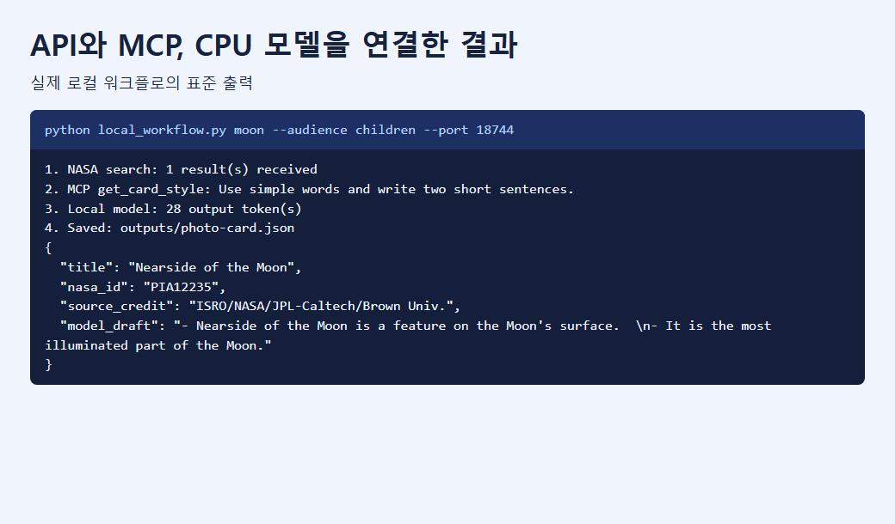

브라우저 실습
평소 하던 일을
작업 흐름으로 만들기
공개 사진 검색으로 함께 시작합니다. 실습실에서 상자(노드)를 연결하고, 실행 기록에서 자료가 어떻게 이동하는지 확인합니다. 그다음 문서 비교나 관심 자료 수집처럼 각자 해보고 싶은 일을 골라 연결합니다.
혼자 확인할 기준 · 결과가 있는 검색, 0건인 검색, 연결 실패 실습이 각각 다른 상태로 나오는지 봅니다.

11월 26일 목요일
수업 일정
13:00–18:00
휴식 14:45–14:55, 16:00–16:10
- 완성된 그래프 실행해보기
검색어를 바꾸고 어떤 결과가 나올지 예상합니다.
- 워크플로, API, 파일 트리
상자를 연결하고 응답 JSON과 워크플로 파일을 열어봅니다.
- MCP와 Claude Code
도구의 목록과 입력 규칙, CLI 인증과 요청 방식을 확인합니다.
- CPU 모델과 개인 워크플로
작은 모델을 실행하고 자기 주제로 그래프를 조립합니다.
- 다시 실행하고 5회차 준비
실패 상황을 확인하고 다음에 적용할 자료와 검증 기준을 적습니다.
로컬 실습
직접 만든 MCP 도구를 호출합니다
MCP 서버는 앱에 기능을 내어주는 프로그램입니다. 제공한 예제에서는 get_card_style이 children 또는 exhibit를 받아 작성 규칙을 돌려줍니다. 클라이언트는 첫 연결에서 쓸 수 있는 도구 목록을 읽고, 이어서 선택한 도구를 호출합니다.
PowerShell에서 ZIP을 풀고 폴더를 연 뒤 실행합니다. Python 3.11 이상 권장.
py -3 -m venv .venv
.\.venv\Scripts\python.exe -m pip install -r requirements.txt
.\.venv\Scripts\python.exe call_style.py children
.\.venv\Scripts\python.exe call_style.py exhibit예상 결과 · tools/list에서 get_card_style을 확인한 뒤 tools/call에서 선택한 대상의 작성 규칙을 받습니다. style_server.py의 문장 하나를 바꾸고 같은 호출을 다시 실행하세요.

Claude Code · 계정 연결과 응답 확인
CLI는 터미널에서 프로그램에 명령을 주는 방식입니다. Claude Code를 설치한 다음 팀에서 부여받은 본인 좌석으로 공식 CLI 로그인 절차를 진행합니다.
claude --version
claude auth status --text
claude auth login
claude -p "Reply with the word READY."
claude auth logout로그인 뒤 상태를 다시 확인한 다음 응답 테스트를 합니다. 로그아웃은 현재 CLI 세션에서 나갈 때 실행합니다.
이 실습에서 로그인과 모델 호출은 각자의 PC에서 공식 CLI로 진행합니다. 공개 수업 사이트는 설치 명령과 화면 예시를 제공합니다. Team 계정의 실제 수업 환경 호출은 강의 전에 확인하며, 배포 앱에서 Claude를 연동할 때는 Anthropic이 안내하는 Console API 인증을 사용합니다.


로컬 워크플로 한 번에 실행하기
CPU 모델 서버를 모델 실행 안내대로 켠 다음, MCP 실습 폴더에서 아래 명령을 실행합니다. NASA 사진 조회 → MCP 작성 규칙 → 로컬 모델 응답 → JSON 저장을 한 번에 확인할 수 있습니다.
.\.venv\Scripts\python.exe local_workflow.py moon --audience children완료되면 outputs/photo-card.json을 엽니다. 원래 제목과 출처, 모델이 쓴 초안이 각각 어떻게 저장되는지 확인합니다. 캡처 속 초안에는 원문이 뒷받침하지 않는 문장이 들어갔습니다. 실행이 완료됐는지와 초안에 근거가 있는지를 각각 확인해보세요.


모델 다운로드
같은 지시를
CPU에서 실행하기
Hugging Face에서 모델을 찾고, GGUF 파일 하나를 받아 llama.cpp에서 실행합니다. 작은 첫 실습 모델부터 한국어 비교용 모델까지 파일 크기와 사용 목적을 함께 확인할 수 있습니다.
오늘 가져갈 결과물
- 내가 고른 문제를 다루는 워크플로 JSON을 내보냅니다.
- 새 입력으로 실행하고, 중간 결과와 최종 출력을 확인합니다.
- 실패를 한 번 재현하고 멈춘 상자를 찾습니다. 5회차에 붙일 실제 자료와 검증 기준을 적습니다.